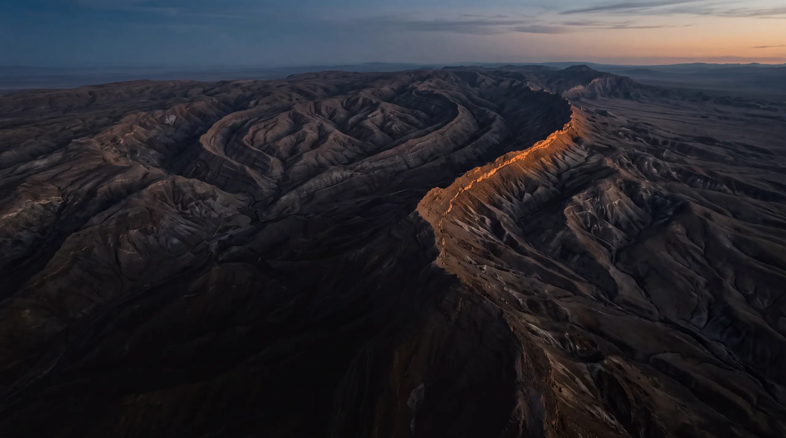
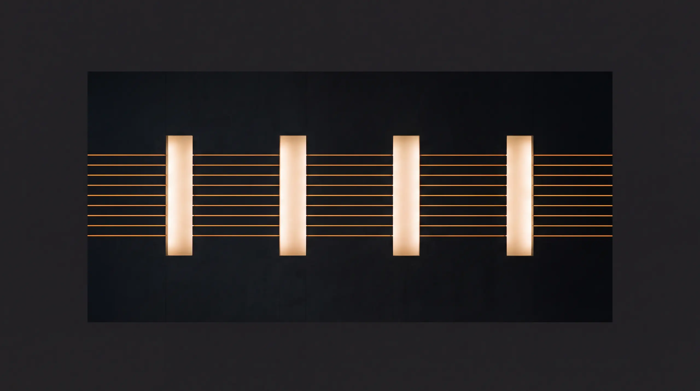
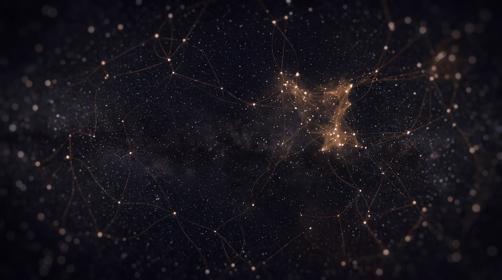
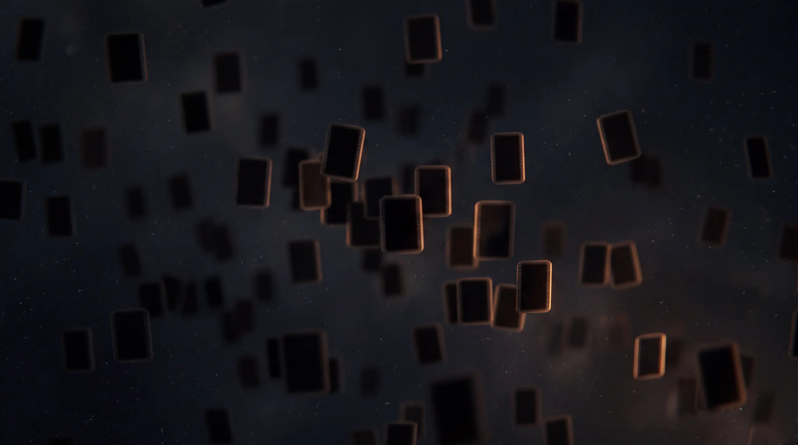
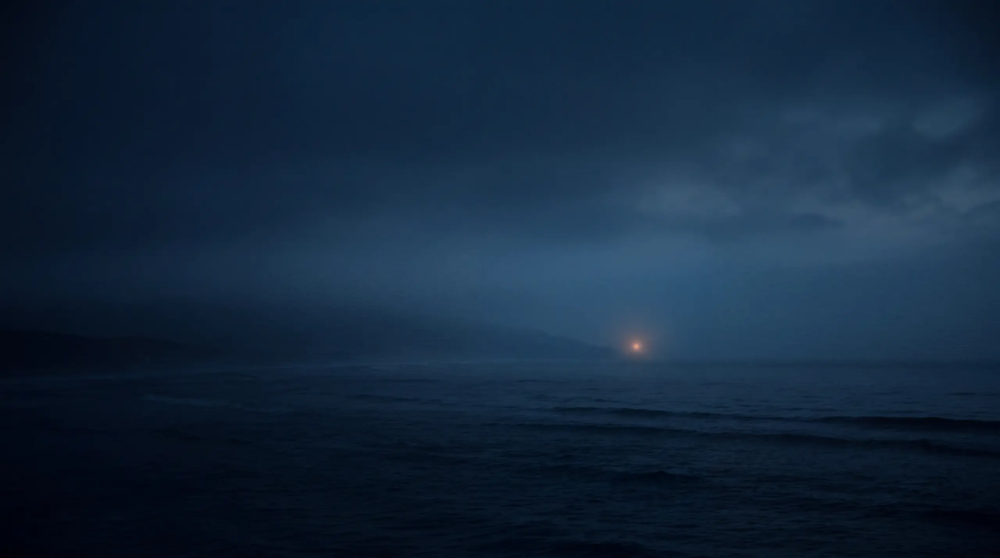
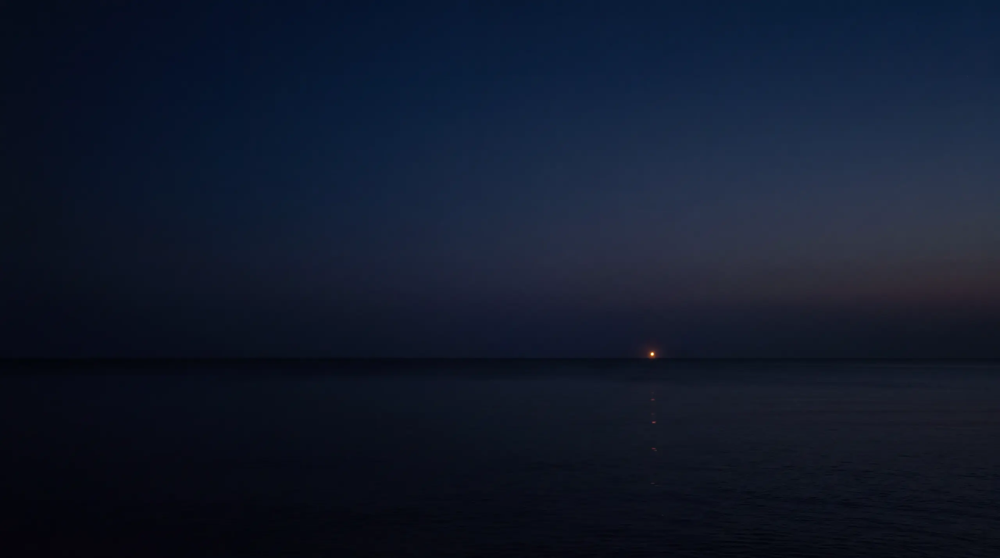

Information Memorandum · Setembro de 2026
Insula AI
Produtora de filmes publicitários com IA generativa e craft de produtora tradicional, com pipeline proprietário que vai do filme 100% gerado à pré-produção de campanhas com set e talento.
A produção publicitária está sendo reprecificada, e a Insula já opera do outro lado dessa curva.
Poucas produtoras no mundo faturaram com IA generativa em cliente tier-1, com craft de filme tradicional e um pipeline que entrega em 18 dias o que a produção convencional entrega em meses. A Insula é uma delas — e faz isso dentro do ecossistema Google, de ponta a ponta.
Quatro argumentos
- A pressão é de custo e de volume, não de tecnologia. Anunciante e agência precisam de mais peças, mais adaptações e mais versões por campanha, com orçamento igual ou menor. A produção tradicional não escala nesse eixo: cada diária extra é custo linear.
- A Insula já opera desse jeito, e há número próprio para provar. Desde 2023, toda a receita da empresa vem de projetos com IA no processo — R$ 8,7 milhões entre 2023 e julho de 2026 — seja gerando o filme inteiro, seja sustentando a pré-produção de campanhas com set e talento. A economia apurada nos jobs de IA chega a 63,7% contra o equivalente tradicional.
- O gargalo migrou de tecnologia para craft — e o acesso não é commodity. Qualquer um assina os mesmos modelos. O que não se compra é direção, curadoria e a capacidade de aprovar uma peça num fluxo de agência e cliente global. Do outro lado, a posição da Insula dentro do ecossistema Google não se replica por assinatura: integração técnica direta, modelos em preview em produção comercial paga, residência no Google Campus e um benefício de mídia que a Insula leva ao cliente.
- Quem compra, compra acesso e método. Holdings e redes globais estão montando capacidade de IA por aquisição porque construir leva anos. A Insula entrega pipeline documentado, portfólio aprovado por clientes tier-1 e uma integração com o Google que funciona como incubadora e aceleradora do negócio.
Quatro pessoas no núcleo, uma rede de direção acionada por projeto.
A Insula AI nasceu em maio de 2025 como label dos sócios da TRIO Hub, produtora com quinze anos de mercado e clientes tier-1. A operação com IA começou antes, em março de 2023, e desde então nenhum projeto da casa passou sem ela.
2023 a jul/2026
três gates humanos
Colgate-Palmolive
cap table 100% fundadores
Linha do tempo
| Quando | Marco |
|---|---|
| Mar. 2023 | Primeira cena text-to-video gerada — man walking in the sand. A partir daí, IA em todos os projetos da casa. |
| 2023–2024 | Primeiros jobs de IA faturados em cliente real: Bradesco, Pilão, Natura. |
| Mai. 2025 | Lançamento público da Insula AI como label, com repercussão em Meio & Mensagem e Grandes Nomes da Propaganda. |
| 2025 | Coautoria do primeiro Guia de Boas Práticas de IA da APRO. |
| 2026 | Brilhante Perfume Extraordinário: primeiro filme 100% criado com IA da Unilever Brasil, com o Google e a Droga5 — mais de 1.000 imagens e 850 cenas geradas. |
| 2026 | O Google deixa de ser ferramenta e passa a cliente, incubadora e parceiro comercial. |
Time
Núcleo fixo de quatro pessoas — Luciano Mathias, Caito Cyrillo, Sheila Souza e Alicia Rovath — e uma camada de direção acionada por projeto: Verena Puhm, Billy Boman, Alexandra BG e Fábio Hacker. Produção executiva em quatro praças — Brasil, Estados Unidos, Argentina e México — com capacidade de faturar e receber localmente em cada uma.
| Pessoa | Função | Praça |
|---|---|---|
| Alicia Rovath | Head of Production | Brasil |
| Luciano Mathias | Chief AI Officer | Reino Unido e EUA |
| Juano Alvarez | Executive Producer | Argentina e México |
Estrutura de custo leve e margem que escala sem contratação proporcional — é o que um comprador estratégico procura quando quer plugar capacidade de IA numa operação de dez mil pessoas.
Um pipeline com portões humanos em cada porta.
Ciclo completo de cerca de 18 dias, contra semanas ou meses na produção tradicional. A IA acelera geração, viabilidade e iteração; direção e juízo crítico continuam humanos.
Três gates contratuais
A proposta comercial formaliza três aprovações sequenciais e cumulativas: proposta criativa, storyboard e filme final. Depois do storyboard aprovado não se altera, substitui ou inclui cena. Isso não é detalhe operacional — é controle de escopo, previsibilidade de margem e prova de que existe processo, não improviso.

O stack
| Ferramenta | Função |
|---|---|
| Mixboard | Brainstorm e concepção |
| Gemini | Cocriação e decupagem de roteiros, cenas e prompts |
| Nano Banana | Geração e edição de imagem |
| Veo + Google Omni | Geração e edição de vídeo |
| Lyria 3 Pro | Trilha |
| Google Cloud Text-to-Speech | Locução |
Mais de 90% do pipeline roda no ecossistema generativo do Google, com modelos ainda em preview usados em produção comercial paga. Veo e Imagen constam da lista de serviços indenizados do Google, que assume obrigação de indenização sobre reclamações de propriedade intelectual relativas ao output gerado.
O pipeline filmado
Todo mundo no mercado mostra o filme final. Quase ninguém mostra como chegou lá, porque quase ninguém tem processo estável o bastante para ser filmado.
De ferramenta a cliente, incubadora e canal.
O Google saiu de fornecedor de ferramenta para cliente pagante, incubadora e aceleradora, e a relação caminha para um quarto estágio: canal. É o argumento mais incomum deste documento.
Como o dinheiro entra
- Crédito pré-pago. O Google contrata um pacote, a Insula produz para marcas do portfólio dele, e essa produção ancora o investimento de mídia da marca no ecossistema.
- Abatimento via DV360. A agência ou cliente com saldo na conta de mídia do Google abate o custo da produção desse saldo.
- Bonificação por investimento em mídia. Produção com a Insula somada a investimento mínimo de 10× o valor em mídia Google, e o Google bonifica o valor da produção.
Nos três casos o pagador é o Google — e, cada vez mais, é também o Google quem leva a Insula ao cliente final, apresentando a produtora a marcas do próprio portfólio. Um cliente grande é receita concentrada. Um parceiro que origina a demanda, financia o capital de giro e ainda abate o custo da produção para o anunciante é infraestrutura comercial.
O que isso faz com a conversa comercial: em vez de disputar orçamento de produção, que é apertado e comparado centavo a centavo, a Insula disputa orçamento de mídia — ordens de grandeza maior e já aprovado. Na prática, o filme sai mais barato, ou sem custo líquido, para quem já investe em mídia Google.

Cinco peças, dois anos de distância entre a primeira e a última.
A sequência não é cronológica: abre no marco de mercado e fecha na origem, para que a distância percorrida fique visível.
Brilhante · Unilever
Primeiro filme 100% IA da Unilever Brasil · Droga5 · Google
Para o Google, a primeira marca de Home Care no país a usar IA em conteúdo publicitário dentro de um ecossistema completo de mídia e mensuração. Mais de 1.000 imagens estáticas e mais de 850 cenas de vídeo geradas com IA.
Direção Von Harbou · Fábio Hacker e Luciano Mathias
Clear Men · Unilever
Com Vini Jr. · múltiplas versões e formatos
Craft com talento global reconhecível, entregue em corte de diretor, versões para YouTube e TV, adaptações e upscales.
KFC
Velocidade e adaptação de formato
O mesmo filme em corte digital e em 9:16, em ciclo curto.
CIF · Unilever
Volume e recorrência no mesmo grupo anunciante
Natura
Dezembro de 2024 · o início do processo de IA
De onde a empresa partiu. Entre este filme e o Brilhante há dois anos e um salto de método.

A adoção já passou da metade dos anunciantes. O comprador está se armando neste eixo.
generativa em vídeo · IAB 2025
com IA até 2026 · IAB
publicitária BR 2025 · APRO
Kantar Ibope Media
A exportação brasileira de produção publicitária cresceu 66% em dois anos — de US$ 51,1 milhões em 2023 para US$ 84,7 milhões em 2025, alta de 52% só no último ano. Produtora brasileira vendendo para fora deixou de ser exceção, e é exatamente o eixo em que as praças da Insula nos EUA, Argentina e México ganham sentido econômico.
Do outro lado da mesa, a WPP consolidou toda a produção global numa unidade só — cerca de dez mil pessoas em mais de quarenta cidades, anunciada em janeiro de 2026 e explicitamente apoiada em IA generativa. Isso valida a tese e identifica o comprador na mesma frase.

Carteira
| Agência | Clientes |
|---|---|
| Droga5 | Unilever — Brilhante, Clear, CIF |
| VML | Colgate-Palmolive, Dell |
| TBWA | KFC, Maturatta |
| Africa | Natura |
| BETC | Pilão |
| AlmapBBDO | Bradesco, Ambev |
| Leo Burnett | Samsung |
| Wieden+Kennedy | Subway, Mondelez |
| David | Burger King, Coca-Cola, Faber-Castell |
Três das cinco peças em destaque são marcas Unilever. Um anunciante global adotando a mesma produtora em múltiplas marcas é muito mais difícil de conquistar do que um job avulso — e é o que sustenta a projeção de recorrência.
Desde 2023, toda a receita passa por IA em alguma etapa.
O que muda de ano para ano não é se a IA está no processo — é quanto do filme final ela gera. 2022 é o último ano antes da virada, e está no gráfico exatamente para marcar o contraste.
Em 2024, filmes inteiramente gerados com IA passaram da metade da receita. Em 2023, 2025 e 2026 pesaram campanhas com set e talento, em que a IA sustenta toda a pré-produção: decupagem, storyboard, testes de direção de arte e validação com o cliente antes de qualquer diária. É a mesma tecnologia em dois pontos da cadeia — num caso substituindo a filmagem, no outro comprimindo o ciclo e o risco antes dela.
Eficiência
| Indicador | 2024 | 2025 |
|---|---|---|
| Economia de produção nos jobs de IA | 63,7% | 24,0% |
| Economia de nota | 52% | 40% |
A queda entre um ano e outro reflete subida na cadeia de valor: em 2024 os jobs de IA eram animatics e peças de menor complexidade; em 2025 entraram peças finalizadas de maior craft, com mais horas humanas.
DRE gerencial mensal por cliente e por projeto (36 meses), EBITDA ajustado, fluxo de caixa, concentração de receita mês a mês, backlog contratado e margem por job. Liberação em fase avançada, sob NDA.
Cinco frentes, em ordem de impacto comercial no curto prazo.
- Benefício de mídia como alavanca comercial. Produção abatida do saldo de DV360 ou bonificada mediante investimento em mídia. Escala sem aumentar estrutura, e é o argumento que mais abre porta em agência e cliente direto.
- Pacote recorrente. Sair de projeto a projeto para contrato de volume — a frente que muda a qualidade da receita, e portanto o múltiplo.
- Google como canal. Cada filme da Insula amplifica receita de mídia do Google, e cada marca apresentada pelo Google entra na carteira sem custo de aquisição.
- Praças internacionais. Brasil, EUA, Argentina e México, com capacidade de faturar e receber localmente — inclusive quando o cliente não consegue remeter recursos para fora do país.
- Produto próprio. Ferramentas, automações e banco de imagem — o que muda a tese de serviço para produto.
Riscos e mitigantes
| Risco | Mitigante |
|---|---|
| Concentração de receita | O Google é canal, não cliente único, e origina demanda de marcas distintas. Histórico de recompra de cinco anos no maior cliente, pipeline de 284 contatos mapeados em 212 agências e holdings, metas de diversificação. |
| Dependência do ecossistema Google | Ferramenta é substituível — método, gates e direção não mudam se o gerador mudar. A relação comercial é que é insubstituível, e favorável. |
| Key person nos sócios | Método documentado e filmado, segundo nível de liderança, redundância comercial nas praças. |
| Direito comercial sobre o output | Veo e Imagen constam da lista de serviços indenizados do Google, com obrigação de indenização sobre reclamações de PI relativas ao output gerado. |
| Prêmio de múltiplo em categoria nova | Dados operacionais repetíveis — ciclo, margem, recompra — e a curva setorial: metade dos anunciantes já usa IA generativa em vídeo. |
Responsabilidade
Luciano Mathias integrou o grupo de trabalho que desenvolveu o primeiro Guia de Boas Práticas de IA da APRO, com artigo de autoria própria entre os primeiros do guia. Os quatro princípios — neutralidade ativa, transparência e consentimento, conformidade legal e direitos autorais, e supervisão humana — são política interna da empresa, não citação de terceiro.
Assessoria da transação
Todas as comunicações, perguntas e pedidos de informação sobre este memorando ou sobre uma possível transação envolvendo a Insula AI devem ser dirigidos à MAGMA.
